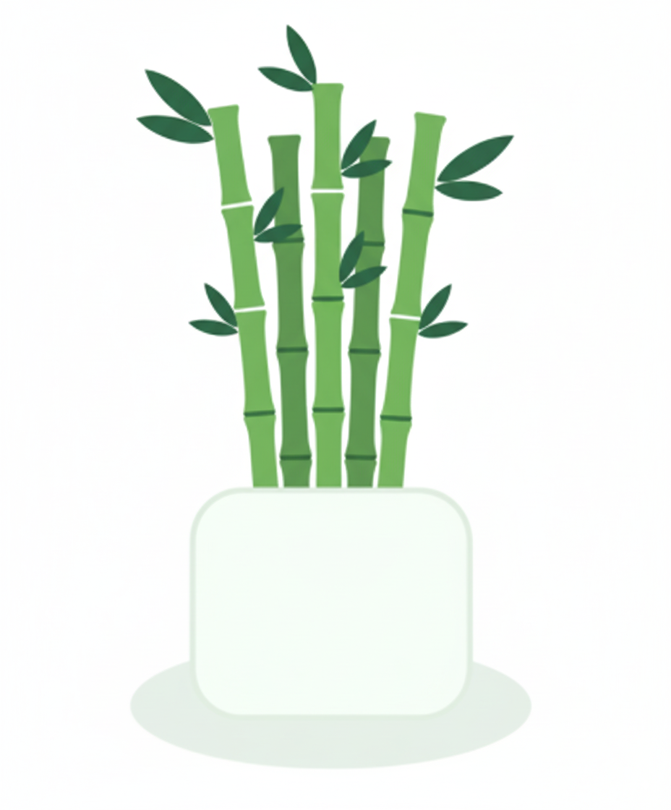

This little lotus bamboo celebrates your promotion.
May it remind you of steady growth and calm focus. Here's a concise care guide so it thrives on your desk.
Prosperity & Growth 🌱
🌱 Ongoing Care Guide
Water refresh: Change water every 7–10 days. Rinse the vase and pebbles to prevent algae.
Soil watering: Water only when the top 1-2 inches of soil feel dry.
Light: Prefers bright, indirect sunlight. A desk lamp is also fine if natural light is low.
Fertilizer:
- In water: Add one drop of liquid houseplant fertilizer every 4–6 weeks.
- In soil: Use a balanced fertilizer monthly during growing seasons.
Cleaning: Gently wipe leaves with a damp cloth to remove desk dust.